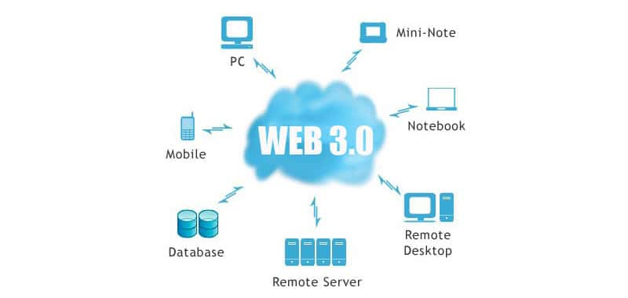

| Evolucion de las aplicaciones web |
| Internet |
Lanzamiento de ARPANET en 1969, considerado el precursor de Internet.
La adopción del protocolo TCP/IP en 1983, estableciéndose como el estándar para la comunicación en redes.
La invención del World Wide Web en 1990 por Tim Berners-Lee en el CERN.
El desarrollo del primer navegador web gráfico, Mosaic, en 1993 por Marc Andreessen.
La comercialización de Internet en 1995, que impulsó el crecimiento del comercio electrónico.
La fundación de Google en 1998, transformando la búsqueda en línea.
La burbuja de las empresas punto com, seguida de su colapso en 2000.
El lanzamiento de Wikipedia en 2003, una enciclopedia en línea colaborativa.
La introducción del iPhone en 2007, que revolucionó la navegación móvil en Internet.
La implementación del protocolo IPv6 en 2016 para abordar la escasez de direcciones IP en IPv4 |
|
| Web 1.0 |
El nacimiento de la World Wide Web en 1991.
La creación de los primeros sitios web a mediados de la década de 1990.
El lanzamiento del primer navegador web.
La fundación de empresas emblemáticas como eBay y Amazon.
El inicio de la era del comercio electrónico.
La popularización de los motores de búsqueda.
El desarrollo inicial de tecnologías como HTML, CSS y JavaScript básico.
La creación de los primeros servicios de correo electrónico y foros en línea.
La Web 1.0 se caracterizaba por la presentación estática de información y una interacción limitada por parte del usuario.
El surgimiento de la "página web estática" como la principal forma de presentar contenido en línea.
|
 |
| Web 2.0 |
La popularización de la Web 2.0 a principios de los años 2000.
El surgimiento de plataformas de redes sociales como Facebook, Twitter y LinkedIn.
La adopción generalizada de tecnologías interactivas como AJAX (Asynchronous JavaScript and XML).
El lanzamiento de aplicaciones web altamente interactivas y colaborativas.
La transición hacia un enfoque centrado en el usuario, con énfasis en la participación y la generación de contenido por parte de los usuarios.
La creación de Wikipedia como una enciclopedia en línea colaborativa.
La aparición de blogs y servicios de microblogging como Blogger y Twitter.
El auge de plataformas de intercambio de contenido multimedia como YouTube y Flickr.
El desarrollo de comunidades en línea y formas nuevas y diversas de compartir información y conectarse en la web.
La evolución de la publicidad en línea y modelos de negocio basados en la web
|
 |
| Web 3.0 |
El desarrollo y la popularización de la Web Semántica a partir de principios del siglo XXI.
La introducción de tecnologías y estándares semánticos como RDF (Resource Description Framework) y OWL (Web Ontology Language).
El enfoque en hacer que la información sea más comprensible tanto para los humanos como para las máquinas.
La implementación de sistemas de búsqueda más inteligentes que pueden comprender el significado y el contexto de la información.
El uso de metadatos y ontologías para enriquecer y organizar el contenido en la web.
La aplicación de la Web Semántica en diversas áreas como la búsqueda de información, el comercio electrónico, la salud y la educación.
La adopción de tecnologías de Big Data para el análisis y la interpretación de grandes volúmenes de datos en la web.
El desarrollo de aplicaciones y servicios basados en la integración de datos de diversas fuentes y la creación de conocimiento a partir de esos datos.
|
 |
Web 4.0 |
Integración total de la inteligencia artificial (IA) en todas las facetas de la web, desde la navegación hasta la creación de contenido y la interacción con los usuarios.
Desarrollo de sistemas web autónomos que pueden tomar decisiones complejas y adaptarse en tiempo real a los cambios en el entorno digital.
Avances significativos en la realidad aumentada (AR) y la realidad virtual (VR), lo que permite experiencias web más inmersivas e interactivas.
Interconexión total de dispositivos y objetos a través del Internet de las Cosas (IoT), lo que permite una integración sin fisuras entre el mundo físico y digital.
Mayor énfasis en la seguridad y la privacidad de los datos, con tecnologías avanzadas de cifrado y protección de la información personal.
Desarrollo de interfaces de usuario más intuitivas y naturales, como la voz, el gesto y la expresión facial, para interactuar con la web.
Integración de tecnologías emergentes como blockchain para garantizar la transparencia y la confiabilidad en las transacciones en línea.
|
 |